Neu in 1.1: Vorschaubereich, Lesemodus, Kennwortverwaltung, Archivkonvertierung und fünf weitere Sprachen. Änderungen ansehen
Was es kann
Alles, was ein Packprogramm können muss
Öffnet zip, 7z, rar, tar, iso und Dutzende weitere Formate. Erstellt zip, 7z und tar mit AES-256-Kennwörtern. Durchsuchen, Dateien in den Explorer ziehen und Archive in ein anderes Format konvertieren; das Original bleibt, bis Sie es löschen.
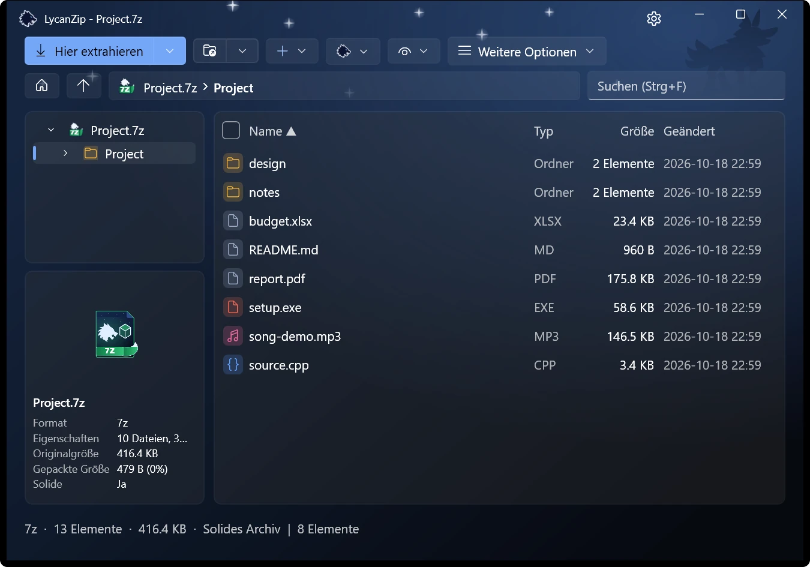
Ordnerbaum und Detailliste.
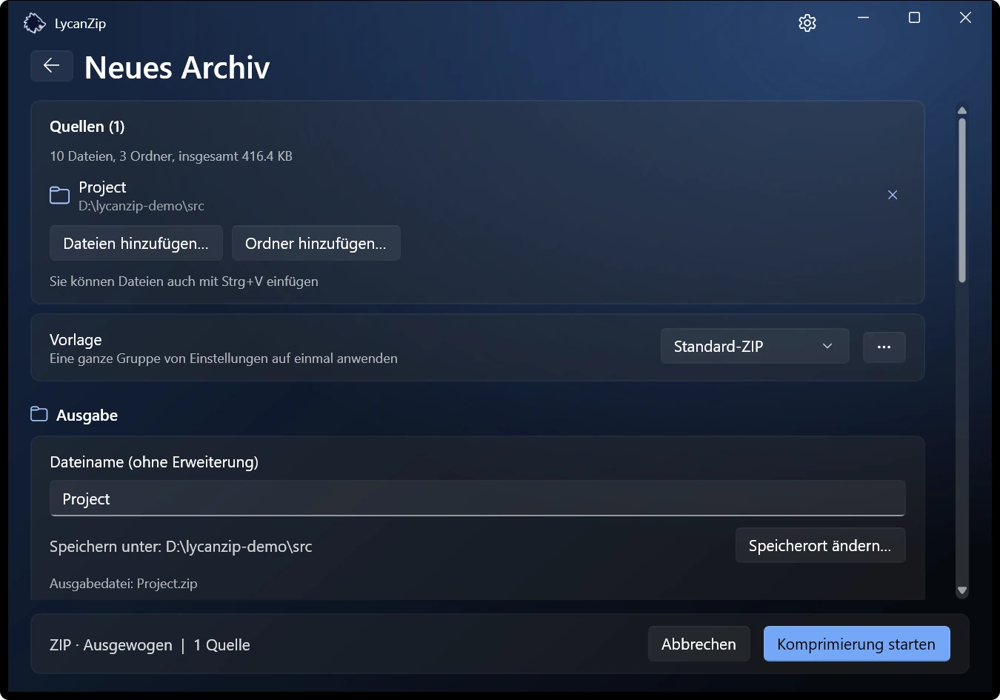
Archiv erstellen: Format und Modus wählen.
Dateinamen stimmen
Alte zip-Dateien mit Namen in Big5, GBK, Shift-JIS oder EUC-KR werden automatisch erkannt. Aktualisieren Sie ein solches Archiv, werden die Namen in UTF-8 gespeichert und sind auf jedem PC lesbar; die Daten werden unverändert kopiert.
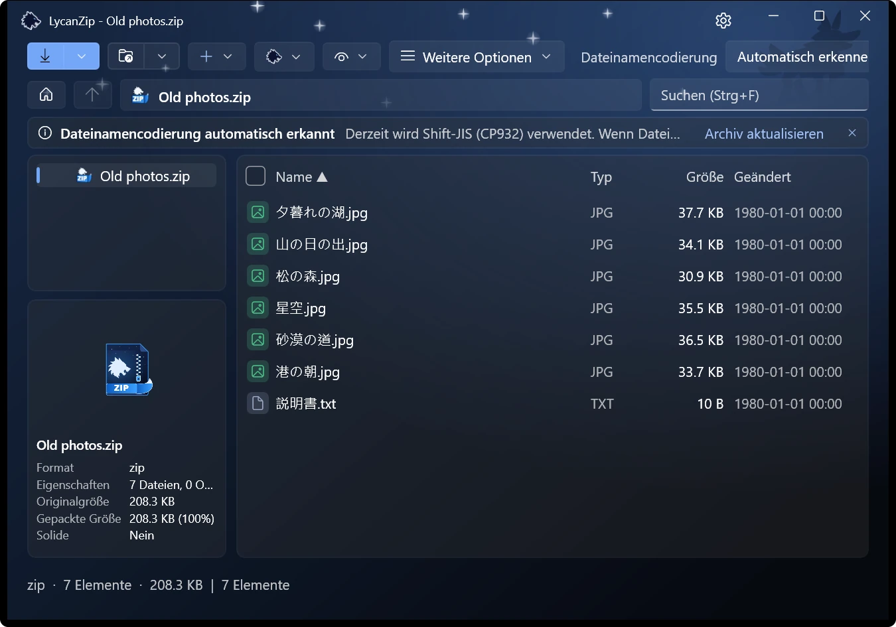
Automatisch erkannt: Shift-JIS.
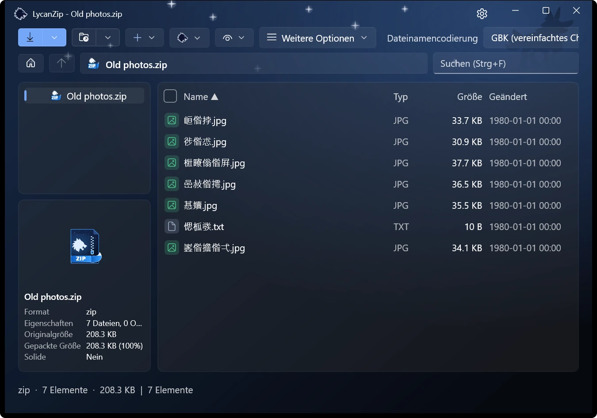
Dasselbe Archiv mit der falschen Codierung gelesen.
Hineinsehen, ohne zu entpacken
Wählen Sie eine Datei aus, und der Vorschaubereich zeigt sie an: Bilder, Text, PDF und Audio. Bilder öffnen sich auch in einem Betrachter mit Miniaturleiste, Zoom und Animationen. Musik läuft im integrierten Player, der die Tags anzeigt.
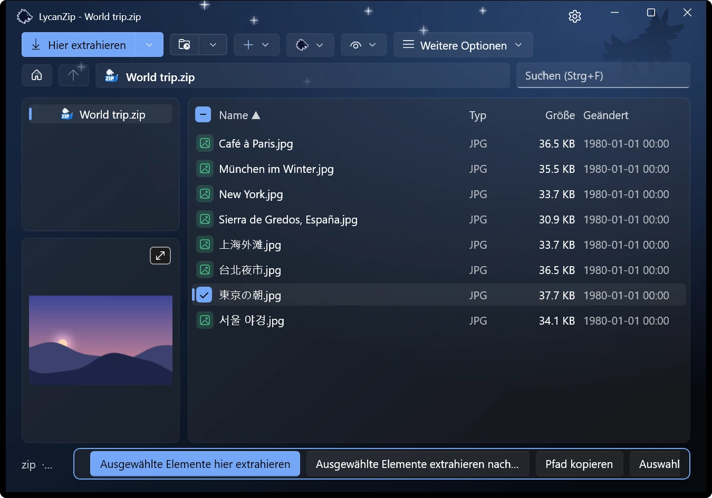
Der Vorschaubereich folgt der Auswahl.
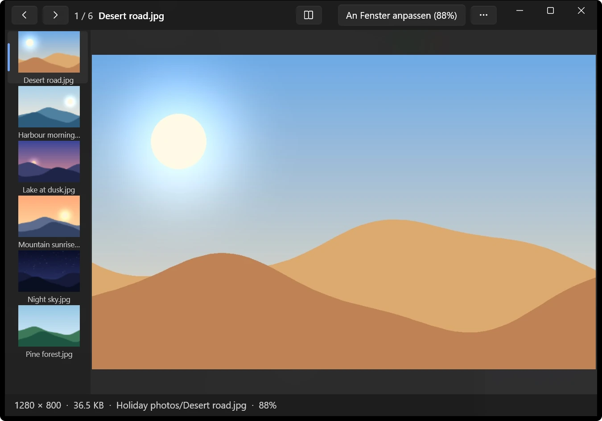
Die Bildvorschau.
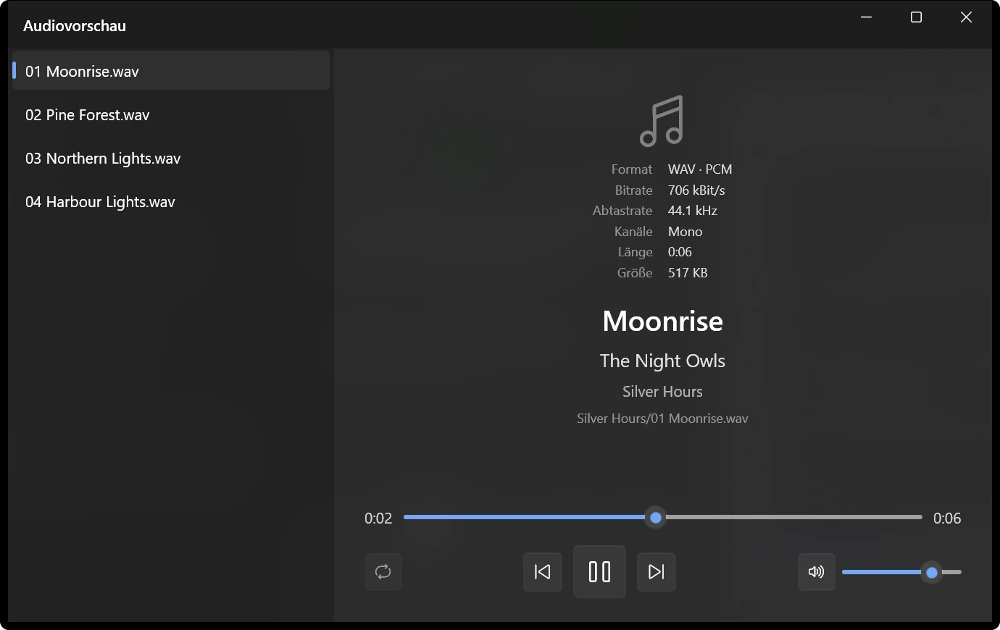
Die Audiovorschau.
Ein Lesemodus für Comics
Ein ganzes Buch der Reihe nach, auch über Ordner hinweg, zwei Seiten nebeneinander und auf Wunsch von rechts nach links. Die Seite wird für jedes Buch gespeichert. .cbz, .cbr, .cb7 und .cbt öffnen sich direkt darin.
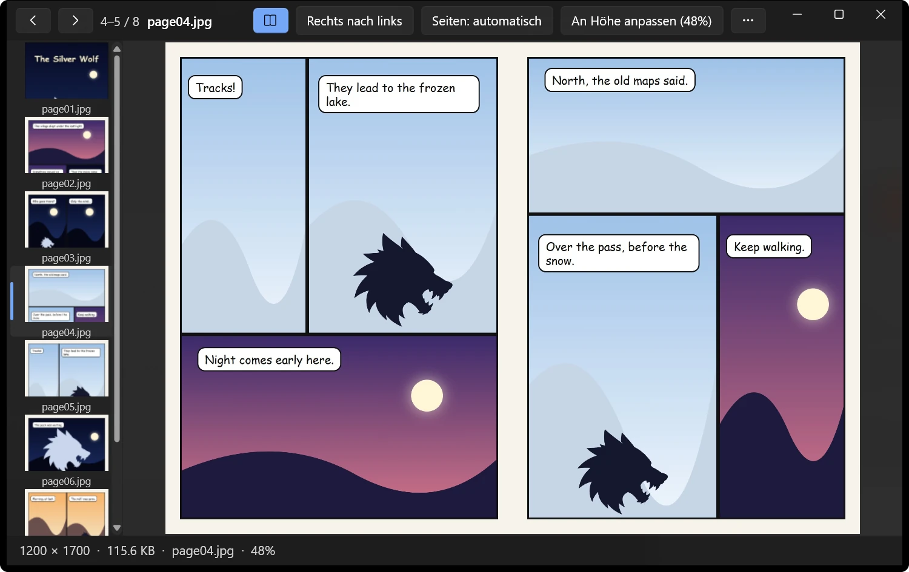
Zwei Seiten nebeneinander im Lesemodus.
Eine Kennwortverwaltung, die auf Ihrem PC bleibt
Kennwörter, die in dieser Sitzung funktioniert haben, und gespeicherte Kennwörter werden ausprobiert, bevor Sie gefragt werden. Gespeicherte Kennwörter werden für Ihr Windows-Konto verschlüsselt, optional mit einem Masterkennwort. Nichts wird irgendwohin gesendet.
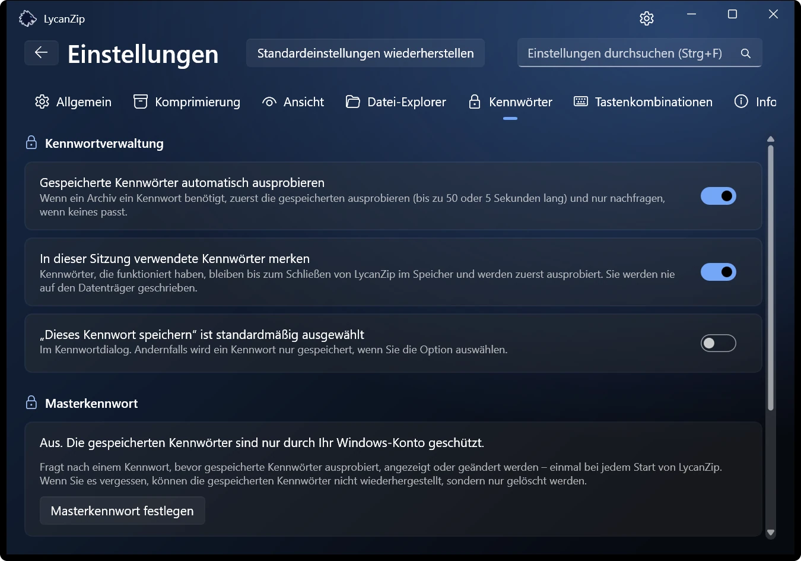
Die Registerkarte „Kennwörter“ in den Einstellungen.
Das Kontextmenü von Windows 11 Nur Store-Version
Einträge direkt auf der obersten Ebene des Windows-11-Menüs, ohne zuerst „Weitere Optionen anzeigen“. Windows erlaubt das nur signierten Paketen, darum gibt es das nur in der Microsoft-Store-Version. Die anderen Versionen nutzen das klassische Menü.
Dunkel, hell, Ihre Farbe
Hell oder dunkel, sechs Akzentfarben oder einfach wie Windows. Optionale Soundeffekte (zwei Sets) und Animationen, die sich abschalten lassen.
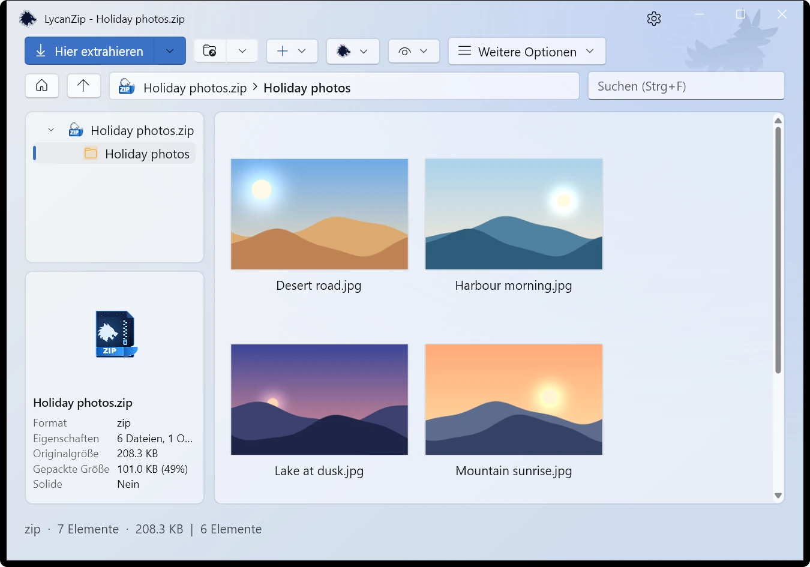
Hell · Mondlicht
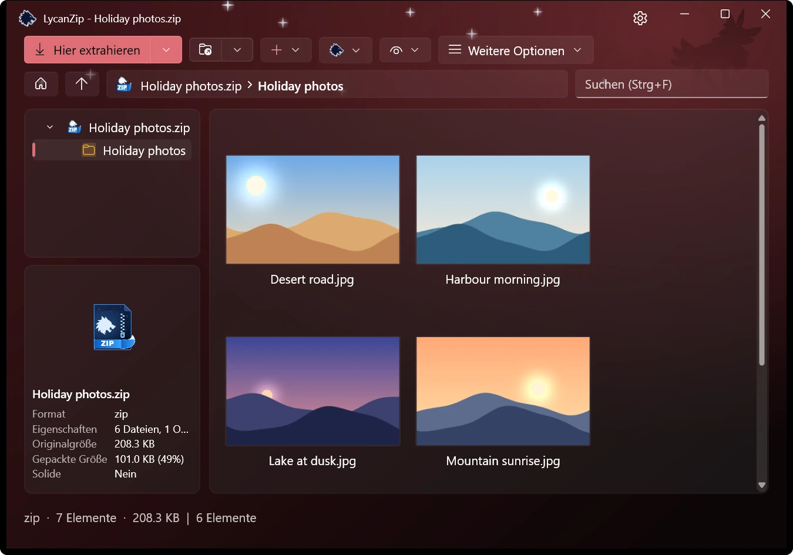
Dunkel · Blutmond
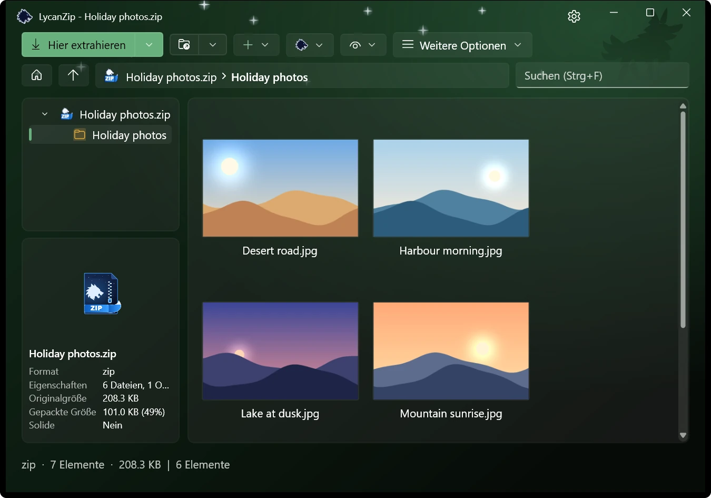
Dunkel · Wald
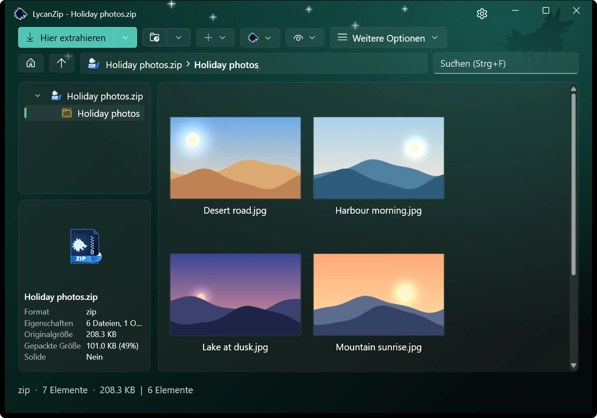
Dunkel · Polarlicht
Archive direkt ändern
Hinzufügen, löschen, umbenennen, ersetzen in zip, 7z und tar, oder eine Datei im eigenen Editor bearbeiten und zurückspeichern. Das geschieht auf einer sicheren Kopie.
Sicher von Grund auf
Keine Telemetrie, keine Werbung, keine Datensammlung. Dazu drei Wege, zu prüfen, was Sie gleich öffnen:
Virenscan
Scannen Sie ein Archiv über Windows AMSI mit Ihrem eigenen Virenschutz, ohne es auf die Festplatte zu entpacken.
SHA-256-Prüfung
Hashwerte für jede Datei, jeden Ordner und jedes Archiv. Eine .sha256-Datei prüfen Sie per Doppelklick.
VirusTotal-Abfrage
Ein Klick öffnet die VirusTotal-Seite zum Hash der Datei. Nur der Hash wird gesendet, nie die Datei.
Unsichere Pfade werden abgelehnt, Verknüpfungen nicht verfolgt und Archivbomben erkannt.